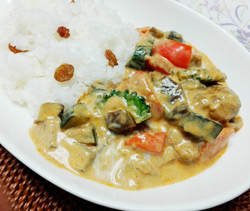

チキンとナスのココナッツカレー
- 調理時間：40分
- （一人当たり）
- カロリー：591kcal
- たんぱく質：19.4g
- 脂質：35.9g
- 炭水化物：48.5g
- 塩分：2.0g


＜2人分＞
- 鶏モモ肉（一口大に切る）
- 100～200ｇ
- ナス
（乱切りして水にくぐらす） - 2本
- 玉ねぎ（くし切り）
- 1/2個
- パプリカ
（種を取り除いて乱切り） - 1/2個
- ズッキーニ（1㎝幅に切る）
- 1/3個
- ニンニク（みじんぎり）
- 小さじ１
- 豆板醤
- 小さじ１
- カレー粉
- 小さじ１
- ココナッツミルク
- 200ml
- 塩、コショウ
- 適量
- 植物油
- 適量
- ごはん（お好みでレーズン）
- 2膳分


- 鶏モモ肉は一口大に切り、塩・コショウ（分量外）を振る。
- ナス、玉ねぎ、パプリカ、ズッキーニ、ニンニクは、下準備する。
- 鍋に油をしき、鶏肉を皮から焼く。両面に焼き色がついたら一旦取り出す。
- 同じ鍋にニンニク、豆板醤を加えて、弱火にかけ、香りがでたら玉ねぎを加えて炒める。
その他の野菜もすべて入れて炒め、鶏肉も鍋に戻す。 - 水をひたひたになる位（300ml位）いれて煮込む。
野菜と肉に火が通ったら、火を弱め、ココナッツミルク、カレー粉を加えてさらに煮込み、仕上げに塩とコショウで味をととのえる。
チキンとナスのココナッツカレー
香辛料の効果は、嗜好、食欲増進、防腐作用、抗酸化作用など。身近なものにカレー粉がありますが、これは、ウコンやトウガラシなどの多数の材料を配合して作られるミックススパイスです。
エスニック料理と呼ばれる東南アジアの料理には辛いトウガラシがたくさん使われます。この地域の暑さを凌ぐのに、辛い料理は食欲を増す効果や、発汗により体温を調節する効果をもたらしているのでしょう。寒さをしのぐために、辛い料理には体を温める効果があるのも確かですが、それ以上に暑い地域で辛味の香辛料が多く使われることに意味があるのかもしれません。